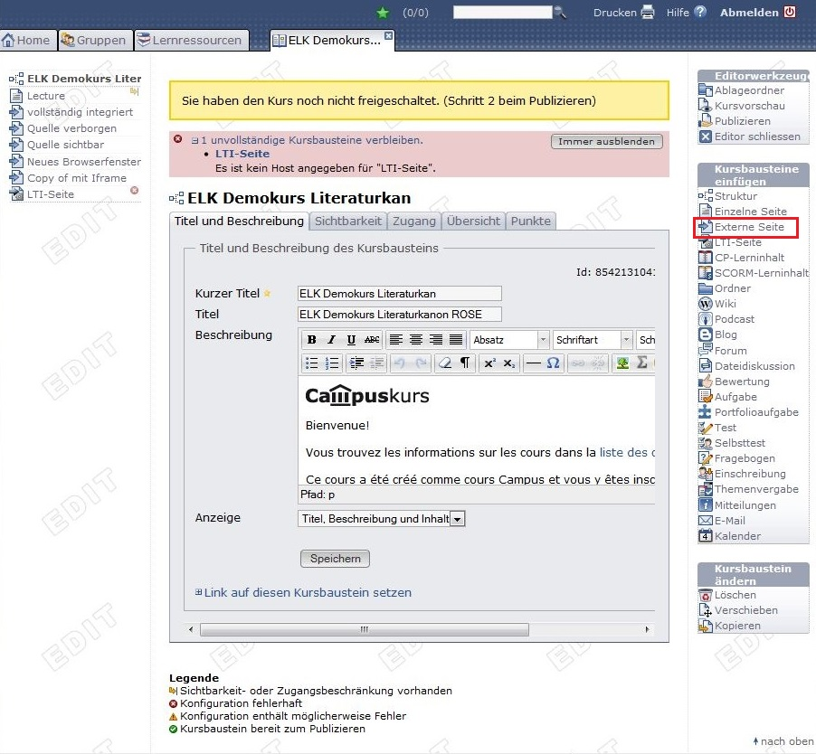

Anleitung zur Einbindung einer Liste in OLAT
Nachdem eine Liste in der Listenansicht publiziert worden ist, kann man diese in einen OLAT-Kurs einbinden, damit die Studierenden lesenden Zugriff darauf erhalten. Dazu geht man folgendermassen vor:
- Klicken Sie bei der entsprechenden Liste in der Übersicht auf View.
- Kopieren Sie nun die URL bei Link in die Zwischenablage ihres Rechners. Unten sehen Sie eine Vorschau der Liste, so wie sie in OLAT dargestellt würde.

- Gehen Sie nun auf OLAT. Nachdem Sie sich eingeloggt haben, starten Sie den Kurs, in welchen Sie die Liste einbinden möchten.
- Klicken Sie nun rechts oben unter Kurswerkzeuge auf Kurseditor.
- Klicken Sie rechts unter Kursbausteine einfügen auf Externe Seite.
 - Wählen Sie nun die Position der Liste an, die sie innerhalb der Kursnavigation (wird den Studierenden ganz links in OLAT angezeigt) einnehmen soll und klicken Sie auf Kursbaustein einfügen.
- Nun sind Sie in der Bearbeitungsansicht des eingefügten Bausteins. Füllen Sie mindestens das Feld Kurzer Titel aus. Unter diesem Titel wird die Liste dann in der Kursnavigation angezeigt. Klicken Sie dann auf Speichern.
- Klicken Sie nun auf den Reiter Sichtbarkeit. Dort setzen Sie bei Gruppenabhängig ein Häklein. Wählen Sie nun den Lernbereich aus, welchem alle Studierenden Ihres Kurses angehören. Für Campuskurse ist das der Lernbereich Campuslernbereich. Klicken Sie nun auf Speichern.
- Klicken Sie auf den Reiter Seiteninhalt. Im Feld URL fügen Sie den Link aus der Zwischenablage ein. Wählen Sie anschliessend darunter die Option Vollständig integriert (Quelle verborgen).
- Setzen Sie nun ein Häklein bei Seite Passwort gesch¨tzt. Bei Benutzer geben Sie den Benutzernamen ein der Ihnen in der Listenansicht angzeigt wird, bei Passwort geben Sie das zugehörige Passwort ein. Klicken Sie auf Speichern.
- Klicken Sie rechts oben unter Editorwerkzeuge auf Publizieren.
- Setzen Sie nun ein Häklein neben dem neuen Kursbaustein und klicken Sie auf Weiter >.
- Falls Registrierte OLAT-Benutzer und Gäste in der Ausklappliste nicht angewählt ist, tun Sie das und klicken Sie auf Weiter >. Klicken Sie dann auf Fertigstellen.
- Verlassen Sie den Kurseditor rechts oben unter Editorwerkzeuge über Editor schliessen.
Die Liste ist jetzt in den OLAT-Kurs eingebunden und für alle eingeschriebenen Studierenden sichtbar. Klicken Sie links in der Kursnavigation auf den neuen Baustein, um sich die Liste anzusehen.